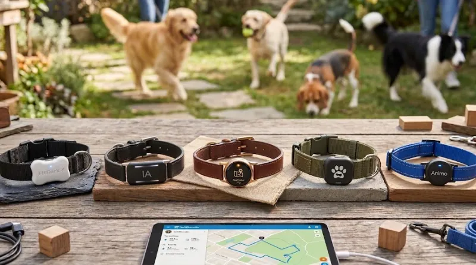
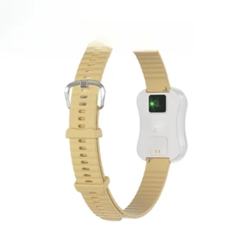
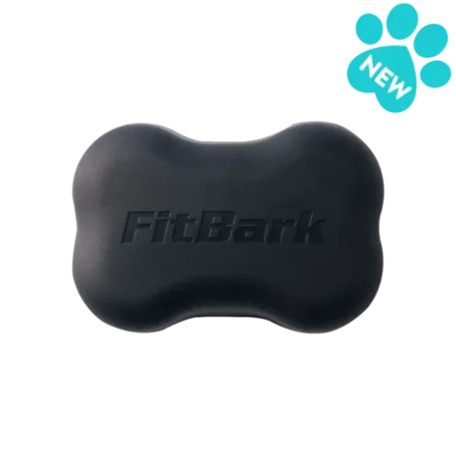
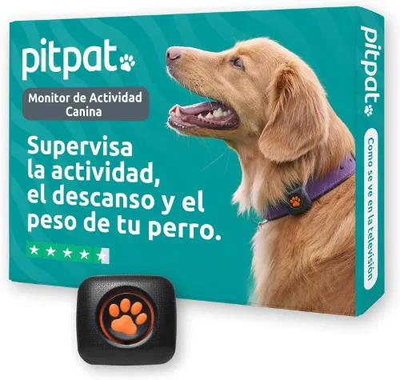
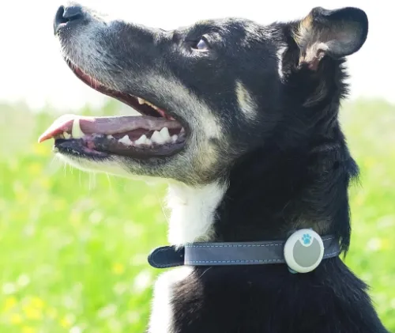

Los 3 mejores collares inteligentes de 2026

Tener a tu perro o gato localizado en todo momento da mucha tranquilidad, pero los dispositivos de este año van un paso más allá. Hemos probado los líderes del mercado para descubrir cuáles son realmente útiles tanto para evitar escapes como para monitorizar el bienestar diario de tu mascota.
1. Collar Inteligente con IA: La clínica en su cuello

En el mercado asiático hemos encontrado un dispositivo que destaca sobre los demás por ofrecer métricas casi de grado médico. Y es que a través de su aplicación "Mopet", este collar es capaz de monitorizar en tiempo real la frecuencia cardíaca, el oxígeno en sangre y la presión arterial de tu mascota. Por si esto fuera poco, y gracias su algoritmo de Inteligencia Artificial, cuando detecta algún dato anómalo en sus constantes vitales o un cambio brusco en su patrón de sueño, te envía una alerta a tu teléfono móvil. Es compatible con perros, gatos y otros animales de compañía pequeños como conejos.
Métricas de salud súper avanzadas (pulso, oxígeno, presión) y alertas predictivas automatizadas por IA.
El coste de envío es algo elevado y requiere usar una app (Mopet) menos conocida que las marcas europeas.
2. FitBark 2: El monitor de salud definitivo

Si la localización no es tu prioridad (porque tu perro nunca se aleja) pero te obsesiona su salud, este es tu dispositivo. Es básicamente un "Fitbit" para perros. Se engancha a su collar actual y monitoriza la distancia recorrida, calorías quemadas, y la calidad del sueño con una precisión avalada por varios estudios veterinarios. Además, pesa tan poco (solo 10 gramos) que es perfecto para razas miniatura e incluso gatos grandes.
Sin cuotas mensuales de suscripción, datos de salud muy precisos y ultraligero.
No tiene GPS para seguimiento en tiempo real (solo Bluetooth).
5. PitPat: El "Fitbit" canino sin suscripciones

Si tu prioridad es conocer a fondo la condición física de tu mascota, ya sea porque lo estás entrenando o porque lo ves un poco fondón el **PitPat** es la opción más equilibrada. Este pequeño dispositivo se acopla a cualquier collar y se encarga de supervisar la actividad, el descanso y el peso de tu mascota. A diferencia de los rastreadores GPS, este dispositivo no requiere de ninguna suscripción mensual, todos los datos se transfieren a tu móvil mediante Bluetooth. Además, si te gusta llevar a tu perro a la playa, no tendrás que preocuparte, es 100% impermeable. Descubre cuánto camina, corre, descansa y juega tu perro, lo lejos que llega y el número de calorías que quema en sus salidas.
Sin cuotas mensuales, batería de larga duración.
El alcance de sincronización es limitado al Bluetooth.
6. Sure Petcare Animo: El experto en comportamiento

Si lo que quieres es entender mejor a tu perro el Sure Petcare Animo es lo que necesitas. No es solo un collar inteligente, es una herramienta que te ayuda a detectar si tu mascota sufre de estrés, ansiedad o incluso alergias. Esto lo consigue aprendiendo patrones únicos del animal. Cuando detecta cambios inusuales en esos patrones, te lo notifica mediante la aplicación del teléfono móvil. Es capaz de registrar con precisión si tu perro empieza a ladrar más de lo habitual, si se rasca compulsivamente o si sufre temblores. Además, es muy ligero, impermeable y no requiere de cuota mensual.
Monitoriza conductas específicas y no tiene cuotas mensuales.
La inversión inicial es un poco alta y no es recargable por USB.
Recomendaciones Finales
Antes de decidirte por un modelo, valora bien cuál es tu necesidad principal. Si tu perro es muy activo en exteriores, prioriza la autonomía y el GPS (como Tractive). Si buscas prevención médica o tienes un perro senior, el FitBark te dará datos más útiles.